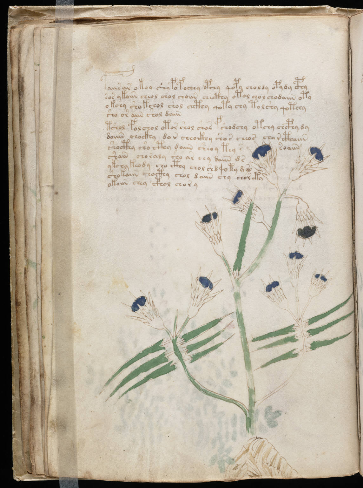

f20v
1faiis ar okoy shy pofochey opchy qopy choldy opydy cphy2sos ykaiin cheol chol choiin checthy otol chol chodaiin oty3okchy sho kchol shol chcthy qoty chy tol shy qotchy4sho or aiin shol daiin5tshol folchol otor shol shos fshodchy otchy chcphy dy6doiiin chockhy dar cheockhy shos cheos char cthaiin7shocthy sho cthy daiin sheoy tey ssoaiin8shain choraly sho ar chy daiin d s9ykchy keody cho cthy chol shd qoty d s10shokaiin chocthy chol daiin chy chor ety11okoiin chey cphol chor y
